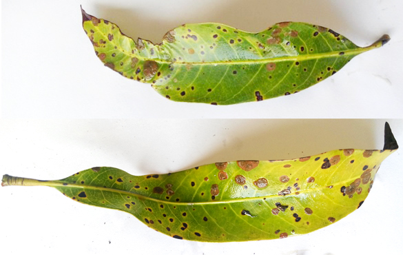
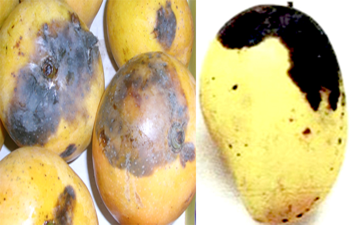

KEBOLICHHOBI. An Image Processing Based Disease Detection System.

Mango Diseases
Anthracnose
Casual Organism : Colletotrichum gloeosporioides fungi.
Affects : Young leaves, branches, stems, blossoms and fruits of any age.
Mode of survival : Organism survives on dried leaves, defoliated branches, mummified flowers and flower brackets.
Damage : Mostly the fruit. Tender twigs wither and die back symptom appears. Young fruits drops from the blossoms. Black spots appear on ripen fruits. For this reason market value decreases.
Symptoms : Produces leaf spots, blossom blight, wither tip, twigs blight and fruit rot. Small blister like spots develop on the leaves and twigs. Affected branches ultimately dry up. Black spots appear on fruits. The fruit pulp becomes hard, crack and decay at ripening. Infected fruits drop.
Conditions that promotes disease : Contact with diseased fruit during transport and storage helps to spread the disease.. The secondary spread is through airborne conidia.
Management/Control : Diseased plants should be destroyed. With the occurance of the disease, mix bavistin or noine 20g in 10 litres of water and spray for 3-4 times per 15 days. Also before ripening of mango spray noine or tilt (5ml in 10 litres of water) with 15 days interval.

Gall Midge
Casual Organism : Procontarinia pustulata. There are also other species of Procontarinia that cause galls on mango leaves.
Affects : Only mango leaves.
Damage : Midges are very small flies, 1-2 mm in length. The female lays eggs into the tissue of young leaves leaving a small reddish spot. The leaf tissue under the red spot becomes swollen and soft. Gall formation begins within seven days and attains a maximum diameter of 3-4 mm. Adults usually emerge from the underside of the leaf leaving the pupal skin protruding from the emergence hole. Thus damage of leaves occur.
Symptoms : Mango leaf gall midge produces wart-like galls on leaves resulting in reduced photosynthesis, leading to leaf drop and lowered fruit production. Younger trees may die while older trees fail to recover normal growth after repeated attacks.
Conditions That Promote Disease : Mango leaf gall midge is spread by wind currents and movement of infested plant material.
Management/ Control: There are no examples of eradication of the insect anywhere in the world.

Mango Malformation
Casual Organism : Fusarium mangiferaeAffects : Branches and flowers
Damage : Reduction in the length of the primary axis and the secondary branches of the panicle, which makes the flowers appear in clusters. The flower buds are transformed into vegetative buds, and a large number of small leaves and stems, characterized by appreciably reduced internodes, gives the appearance of a witches’-broom. Floral malformations are also shorter, thicker, and possess increased crowded branching, resulting in major yield losses since malformed inflorescences do not bear fruit.
Symptoms : Three types of symptoms: bunchy top phase, floral malformation and vegetative malformation. In bunchy top phase in nursery bunch of thickened small shoots, bearing small rudimentary leaves. Shoots remain short and stunted giving a bunchy top appearance. In vegetative malformation, excessive vegetative branches of limited growth in seedlings. They are swollen with short internodes forming a bunches of various size and the top of the seedlings shows bunchy top appearance. In malformation of inflorescence, shows variation in the panicle. Malformed head dries up in black masses and persist for long time. Secondary branches are transformed into number of small leaves giving a witches broom appearance.
Conditions That Promote Disease :Diseased propagatives materials
Management/ Control :
Diseased plants should be destroyed
Use of disease free planting material
Pruning of diseased parts along the basal 15-20 cm apparently healthy portions
Spray 0.02% Napthalene acetic acid three months prior to inflorescence